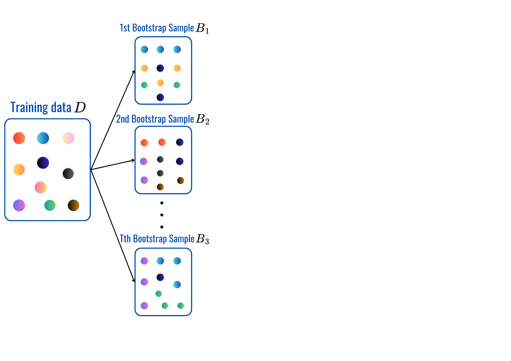
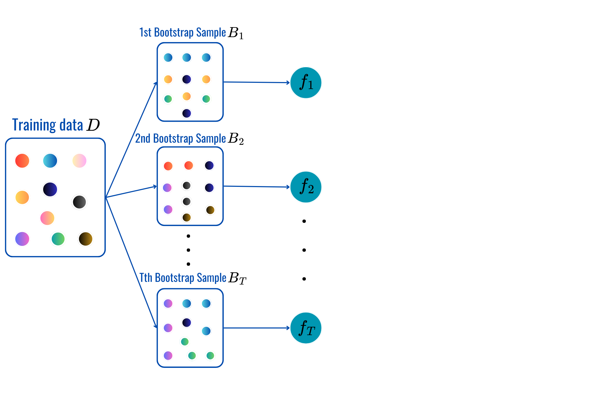
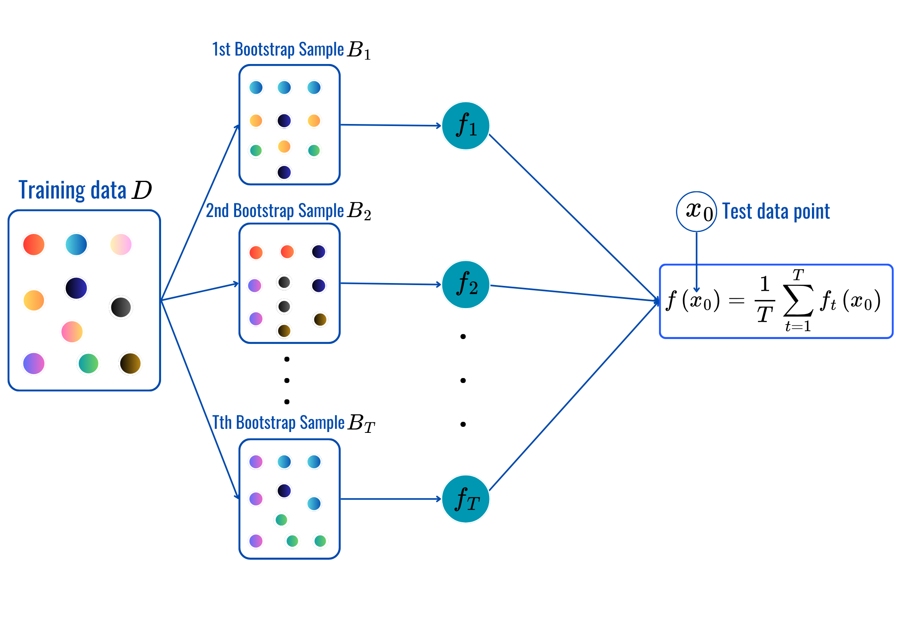
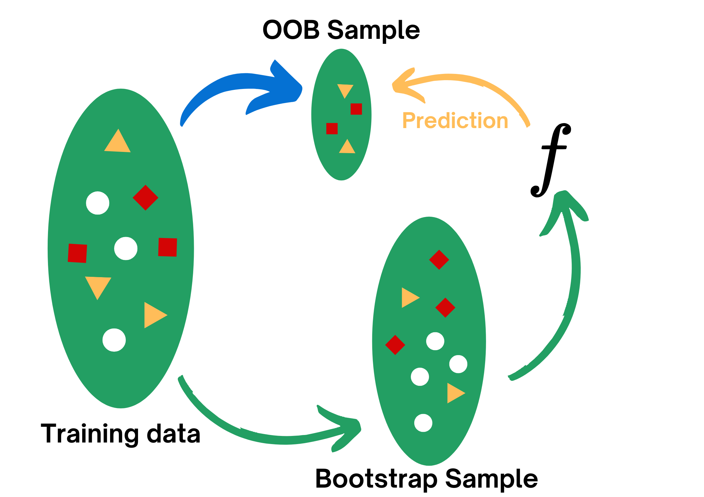
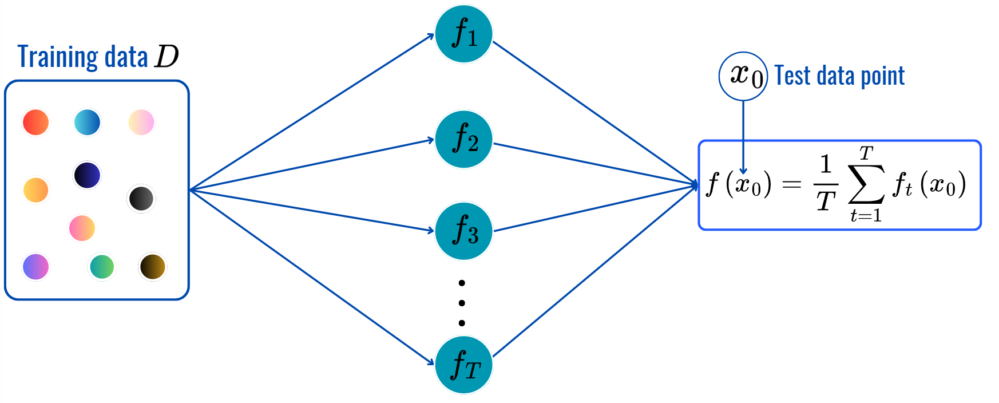
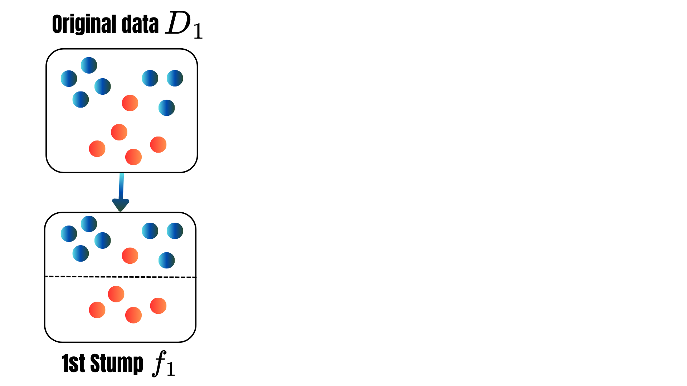
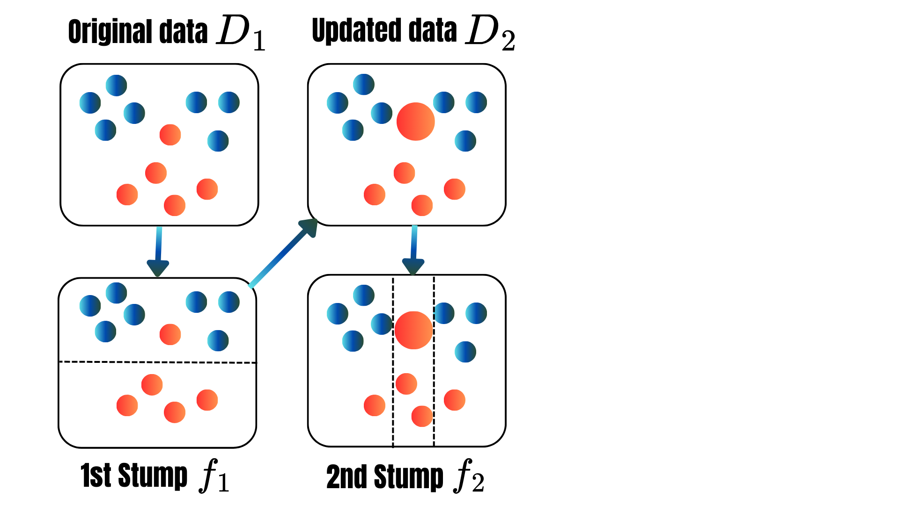
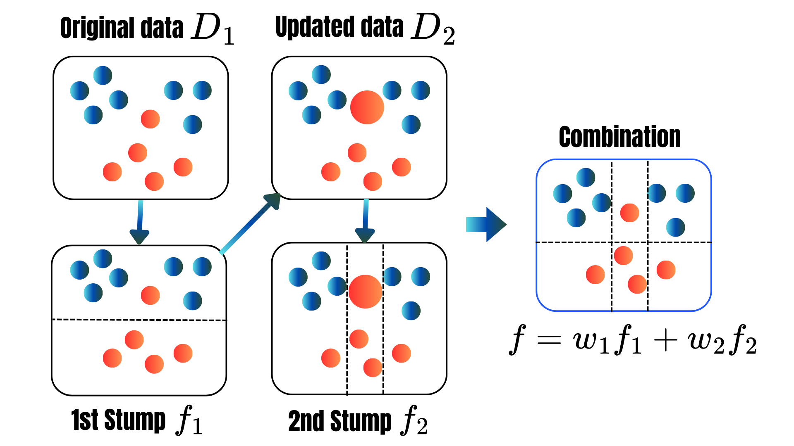
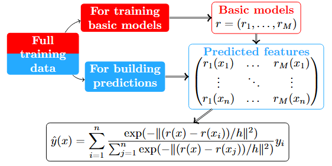
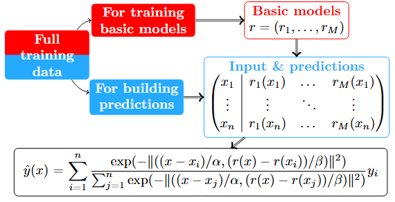

🗺️ Content
Motivation & Tools
Bagging: Random Forest
Boosting: Adaboost, XGBoost…
Concensual aggregation: COBRA, KernelCOBRA, MixCOBRA
Stacking: SuperLearner


AMSI61AML
Motivation & Tools
Bagging: Random Forest
Boosting: Adaboost, XGBoost…
Concensual aggregation: COBRA, KernelCOBRA, MixCOBRA
Stacking: SuperLearner
🤔 Have you ever thought about:
Why do we trust a panel of judges more than a single judge in competitions?
In medicine, why do doctors often seek second or third opinions for complex cases?
Have you noticed that weather forecasts often give a probability of rain rather than a simple yes/no prediction?
Would the famous “Wisdom of Crowds” principle applies to machine learning?
Bagging: Combine nearly decorrelated high-varianced models.
Boosting: Sequentially combine weak learners.
Consensual Aggregation: Combine base learners based on the consensus of predicted features.
Stacking: Build meta-learners on the predicted features.



for t=1,...,T:
Predictions:
Bias-variance trade-off: Assuming \(y_i=f(\text{x}_i)+\varepsilon_i\) where \(\varepsilon_i\overset{iid}{\sim}{\cal N}(0,\sigma^2)\), then for any model \(\hat{f}\) built using training data \(\cal D\), we can decompose MSE of \(\hat{f}\) at any fixed input \(\text{x}_0\) as \[\begin{align*} \mathbb{E}_{\cal D}[(\hat{f}(\text{x}_0)-y_0)^2]&=\mathbb{E}_{\cal D}[(\hat{f}(\text{x}_0)-\mathbb{E}[\hat{f}(\text{x}_0)])^2] + \mathbb{E}_{\cal D}[(\mathbb{E}[\hat{f}(\text{x}_0)]-f(\text{x}_0))^2] + \sigma^2\\ &=\underbrace{\mathbb{V}(\hat{f}(\text{x}_0))}_{\color{blue}{\text{Flexibility of }\hat{f}}}+\underbrace{(\text{Bias})^2}_{\color{darkgreen}{\text{How far }\hat{f}\text{ from } f}}+\underbrace{\sigma^2}_{\color{red}{\text{Uncontrollable Term}}}. \end{align*}\]
Begging: seeks to balance these terms by averaging nearly independent high-varianced models to reduce more stable predictive model.
for t = 1,2,...,T:
Prediction: (same as before).
for t = 1,2,...,T:
Prediction: (same as before).
| id | date | price | bedrooms | bathrooms | sqft_living | sqft_lot | floors | waterfront | view | ... | grade | sqft_above | sqft_basement | yr_built | yr_renovated | zipcode | lat | long | sqft_living15 | sqft_lot15 | |
|---|---|---|---|---|---|---|---|---|---|---|---|---|---|---|---|---|---|---|---|---|---|
| 0 | 7129300520 | 20141013T000000 | 221900.0 | 3 | 1.00 | 1180 | 5650 | 1.0 | 0 | 0 | ... | 7 | 1180 | 0 | 1955 | 0 | 98178 | 47.5112 | -122.257 | 1340 | 5650 |
| 1 | 6414100192 | 20141209T000000 | 538000.0 | 3 | 2.25 | 2570 | 7242 | 2.0 | 0 | 0 | ... | 7 | 2170 | 400 | 1951 | 1991 | 98125 | 47.7210 | -122.319 | 1690 | 7639 |
| 2 | 5631500400 | 20150225T000000 | 180000.0 | 2 | 1.00 | 770 | 10000 | 1.0 | 0 | 0 | ... | 6 | 770 | 0 | 1933 | 0 | 98028 | 47.7379 | -122.233 | 2720 | 8062 |
| 3 | 2487200875 | 20141209T000000 | 604000.0 | 4 | 3.00 | 1960 | 5000 | 1.0 | 0 | 0 | ... | 7 | 1050 | 910 | 1965 | 0 | 98136 | 47.5208 | -122.393 | 1360 | 5000 |
| 4 | 1954400510 | 20150218T000000 | 510000.0 | 3 | 2.00 | 1680 | 8080 | 1.0 | 0 | 0 | ... | 8 | 1680 | 0 | 1987 | 0 | 98074 | 47.6168 | -122.045 | 1800 | 7503 |
5 rows × 21 columns
👉 Check out the notebook.
for t = 1, 2,..., T:



for t = 1, . . . , T:
for t = 1, 2, ..., M:
\[\begin{align*}L(F_t)&=\sum_{i=1}^nL(y_i,F_t(\text{X}_i))+\sum_{m=1}^t\Omega(f_m)\\ \Omega(f_t)&=\gamma T+\frac{1}{2}\lambda\|w\|^2.\\ L(F_t)&\approx \sum_{i=1}^n[g_iF_t(\text{x}_i)+\frac{1}{2}h_iF_t^2(\text{x}_i)]+\Omega(F_t),\\ g_i&=\frac{\partial L(y_i,F_t(\text{x}))}{\partial F_t(\text{x})}\|_{F_t(\text{x})=F_t(\text{x}_i)}\\ h_i&=\frac{\partial^2 L(y_i,F_t(\text{x}))}{\partial F_t(\text{x})^2}\|_{F_t(\text{x})=F_t(\text{x}_i)}. \end{align*}\]
to ensure the efficiency and accuracy of the method.
👉 Check out the notebook.
\[\text{x}_i\overset{f_1,\dots,f_M}{\mapsto}\color{red}{\widehat{\text{x}}=(f_1(\text{x}),\dots,f_M(\text{x}))}\mapsto \hat{y}=\sum_{i=1}^nW_{n,i}(\color{red}{\widehat{\text{x}}})y_i.\]
| Id | \(C_1\) | \(C_2\) | \(C_3\) | \(Y\) |
|---|---|---|---|---|
| 1 | \(0\) | \(1\) | \(1\) | \(1\) |
| 2 | 1 | 1 | 0 | \(\color{blue}{1}\) |
| 3 | \(0\) | \(0\) | \(0\) | \(0\) |
| 4 | 1 | 1 | 0 | \(\color{blue}{1}\) |
| 5 | 1 | 1 | 0 | \(\color{red}{0}\) |
| \(\text{x}\) | 1 | 1 | 0 | \(?\) |

\[\varphi(h)=\frac{1}{K}\sum_{k=1}^K\sum_{(\text{x}_i,y_i)\in F_j}(\hat{y}_i-y_i)^2.\]

\[\varphi(\alpha,\beta)=\frac{1}{K}\sum_{k=1}^K\sum_{(\text{x}_i,y_i)\in F_j}(\hat{y}_i-y_i)^2.\]
👉 Check out the notebook.
\[\text{x}_i\overset{f_1,\dots,f_M}{\mapsto}\color{red}{\widehat{\text{x}_i}=(f_1(\text{x}_i),\dots,f_M(\text{x}_i))}\overset{\text{Meta-learner }f}{\mapsto} \hat{y}_i=f(\color{red}{\widehat{x}_i}).\]
👉 Check out the notebook.
Ensemble learning: combine base learners to create a stronger predictor.
Bagging: Combines high-varianced base learners (trees) to produce a more stable and accurate final model.
Boosting: Sequentially combines weak learners aiming at correcting mistakes made by the previous built combined learners to create a strong model.
Consensual Aggregation: Combine different learners using the consensuses of their predicted features.
Stacking: Build meta-learners using predicted features of base learners to predict the target.